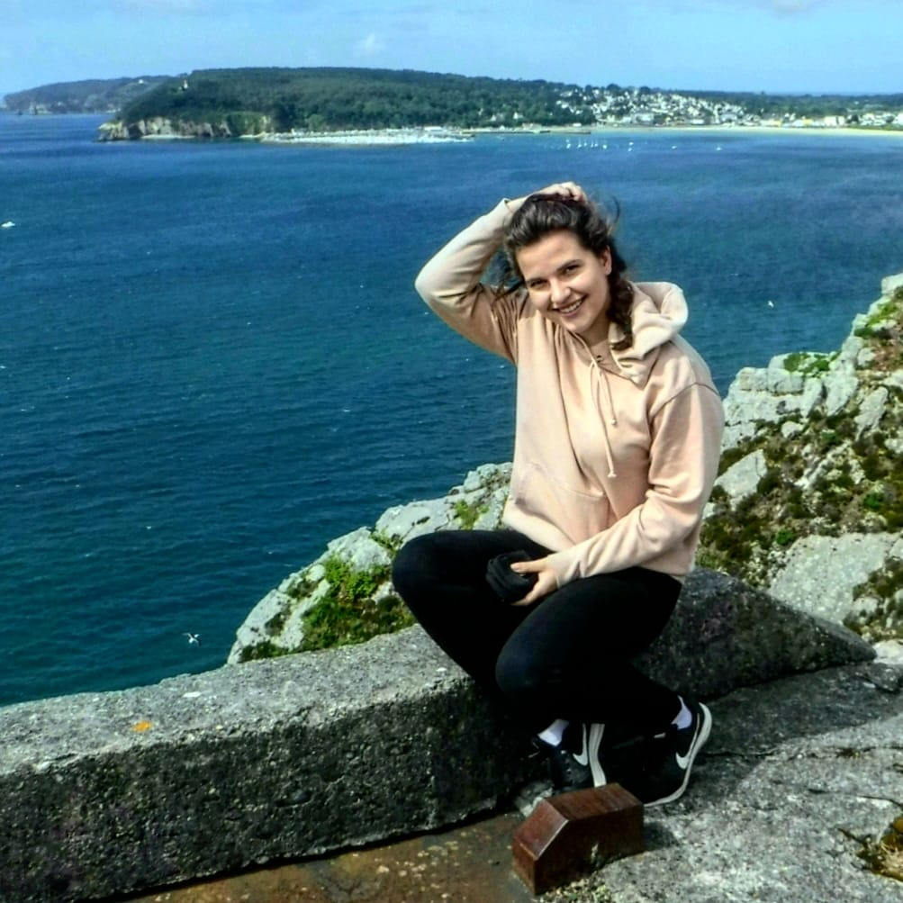
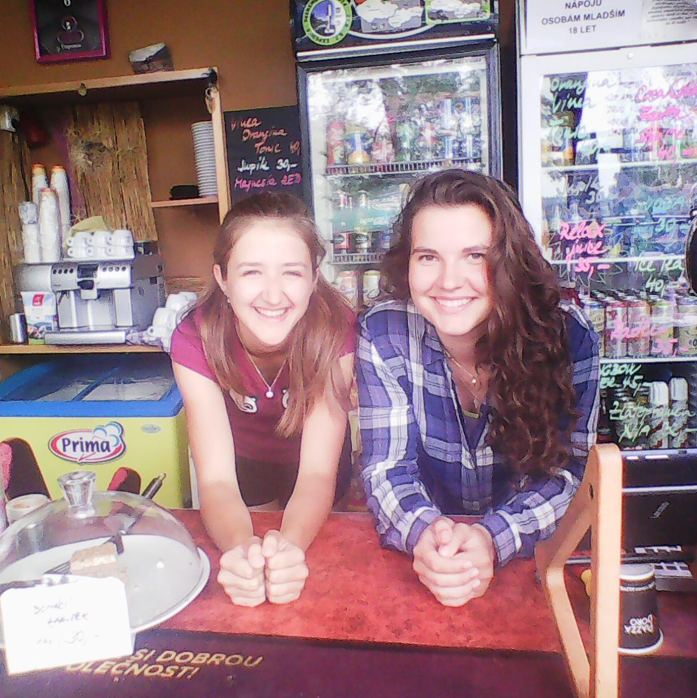
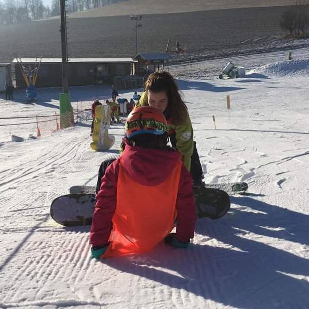
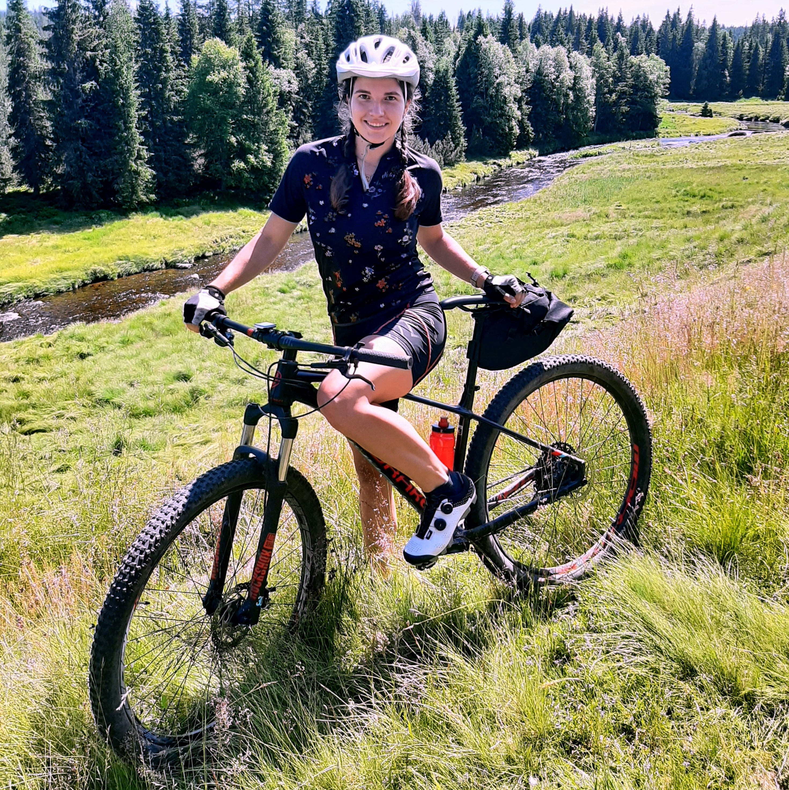
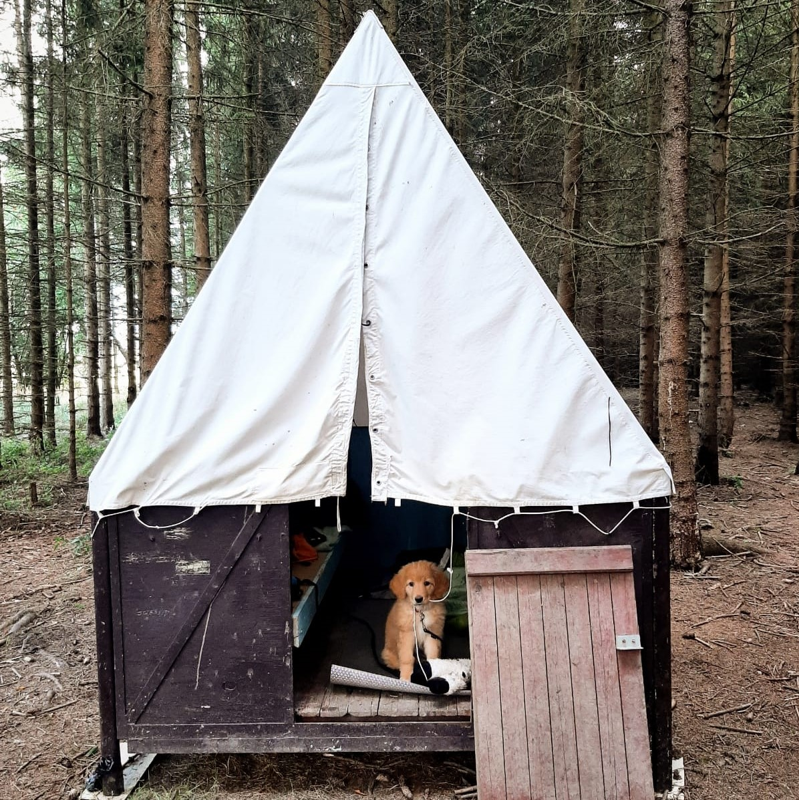
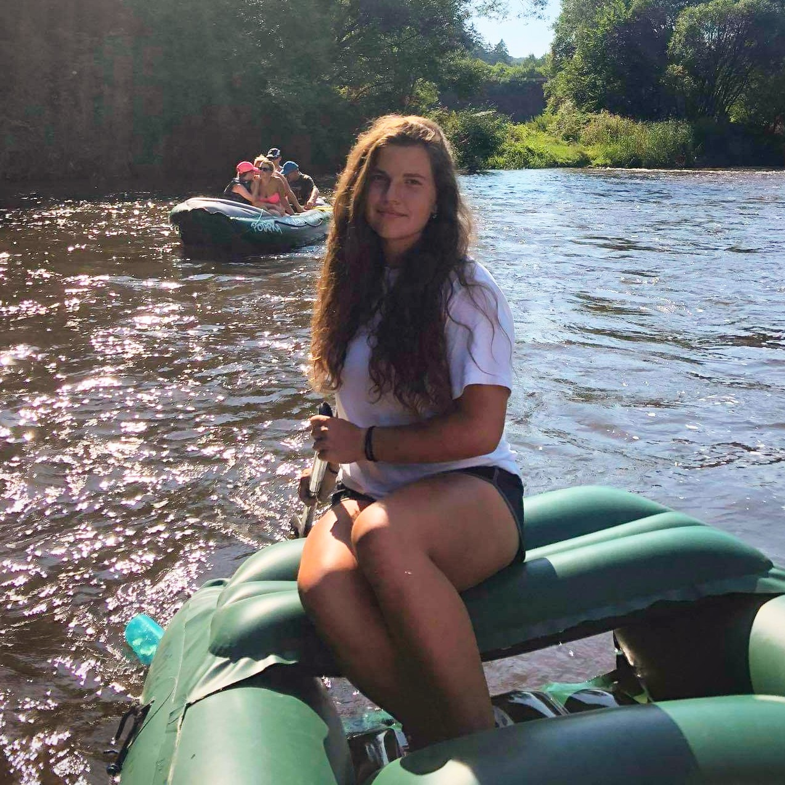
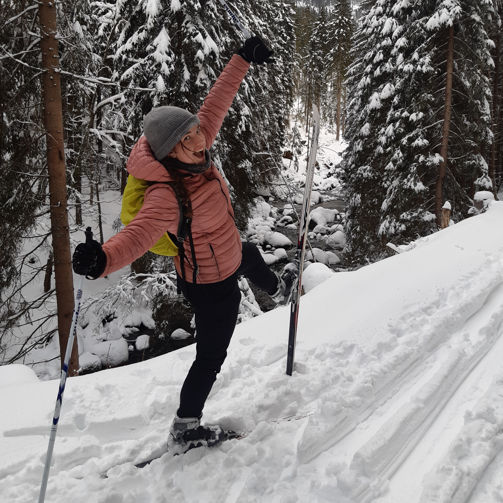
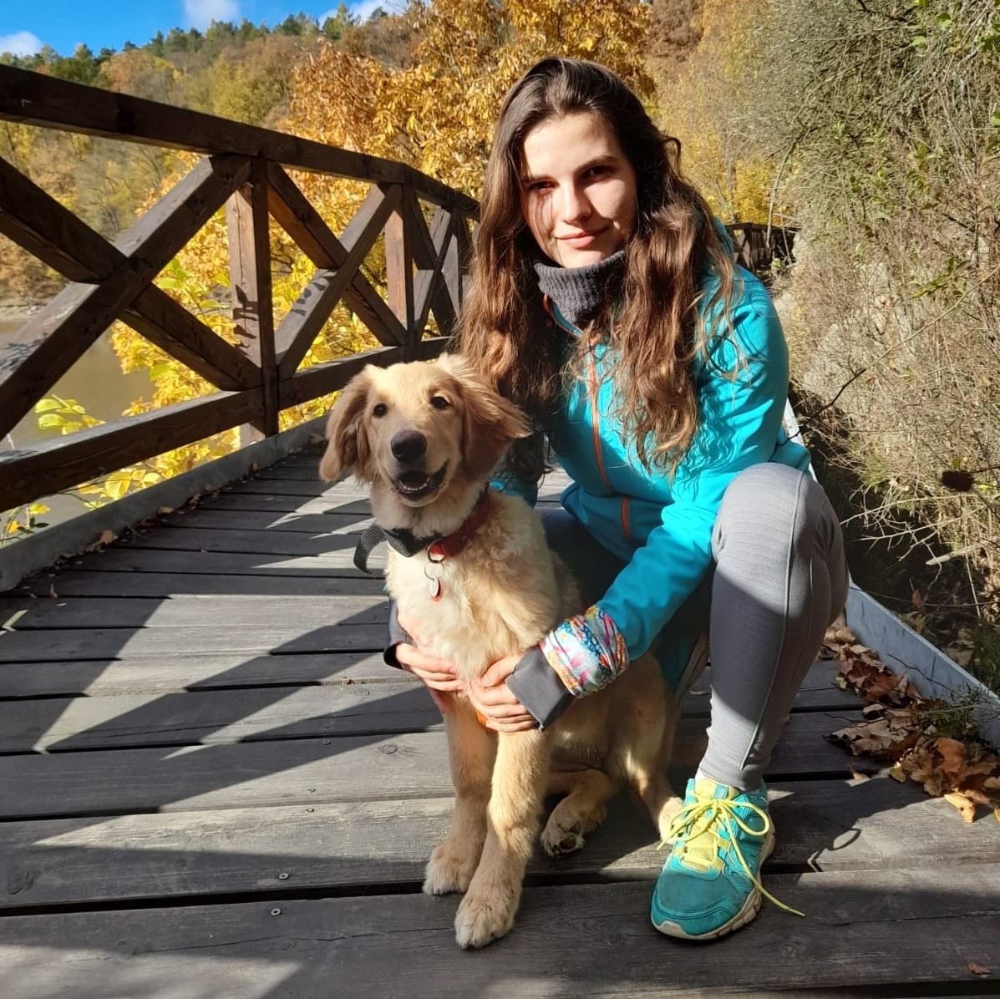
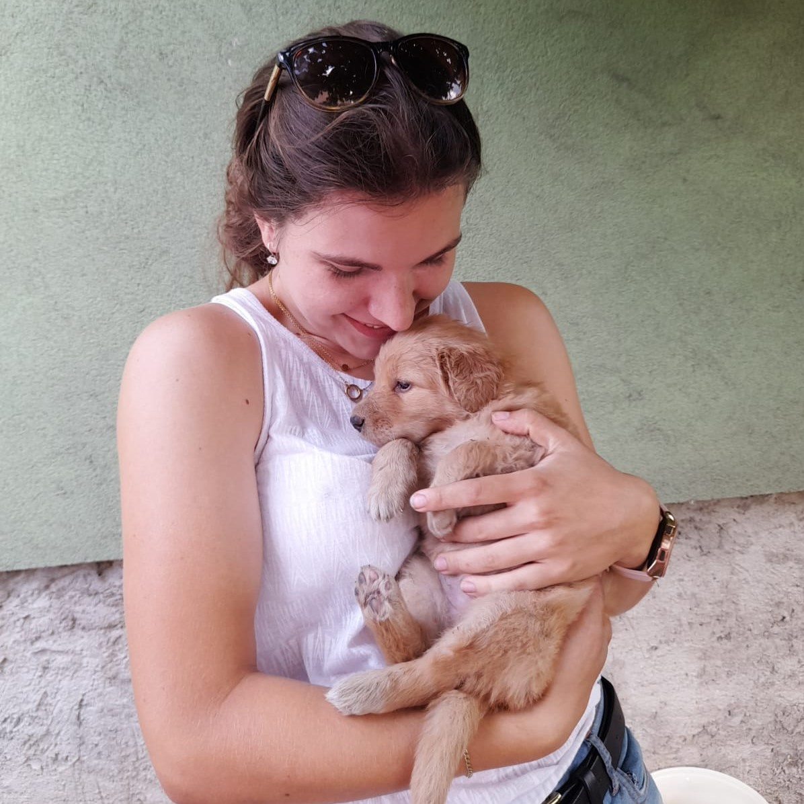

Dobrý den, mé jméno je Andrea Krobauerová, je mi 20 let a jsem studentka z Brna a na této stránce naleznete veškeré důležité informace o mých zkušenostech v různých formách změstnání, o vzdělaní kterým jsem si prošla a o tom, co vše mohu nabídnnout.

Vzdělání
Základní škola: 2008-2017, ZŠ Sirotkova, matematická třída
Střední škola: 2017-2021, Gymnázium Matyáše Lercha, čtyřleté
Vysoká škola: 2022-... MUNI FF Pedagogika se specializácí na digitální technologie ve vzdělávání
Jsem držitelkou certifikátu CAE (Certiicate of Advanced English), který odpovídá angličtině úrovně C1.
Z dalších jazyků ovládám francouzštinu na úrovni B1.
Vlastním licenci pod záštitou MŠMT Instrukotor základního snowboardingu.

Pracovní zkušensti
2020-doteď: Instruktor snowboardingu v lyžařské škole Newmann School
2021-doteď: Vedení kroužků Věda nás baví na různých ZŠ v Brně a okolí
2018-doteď: Doučování matematiky a anglického jazyka žáků druhého stupně
2021-2022: Vedení tanečního kroužku v MŠ Ondrova Studánka
2017-doteď: Obsluha a práce za barem v restauraci Zahrádka na Kozí horce

Já a pedagogika
Jak už jste se mohli dočíst výše, věnuji se studiu Pedagogiky jakožto vědní disciplíny a zároveň digitálním technologiím (nejen) ve vzdělávání.
Obecně by se dalo říci že proces edukace je něco, co mě velmi zajímá a baví, a proto se snažím vyhledávat aktivity v této oblasti.
Pracuji jako lektorka fyziky na základních školách, učím na snowboardu, doučuji a jezdím na dětské tábory. Snažím se nahlédnout do
mysli mladých žáků a pochopit jejich vztah k učení. Mým snem je jednou vytvořit webovou platformu na kterou by se žáci mohli chodit
vzdělávat a inspirovat.
Moje zájmy a koníčky
Mezi moje největší zájmy patří sport - převážně cyklistika, snowboarding, turistka a běh. Velmi ráda trávím čas venku na túrách,
pod stanem, nebo s pádlem v ruce. Zároveň je ale možné mě často vidět s knížkou, a to většinou s nějakou populárně-naučnou.
Za poslední dobu se ze mě stal velký pejskař a většinu svého volného času věnuji právě naší mladé fence jménem Arketis.






Hovawart - chovná činnost
S naší plavou hovawartí fenkou máme velké plány na chov. Rádi bychom měli štěňátka, samozřejmě teprve až bude dost stará a budeme
mít vyřízené všechny náležitosti. Až jednou někde na internetu uvidíte "ChS Podkomorské lesy" tak vězte, že se jedná právě o nás a naši Arketis.